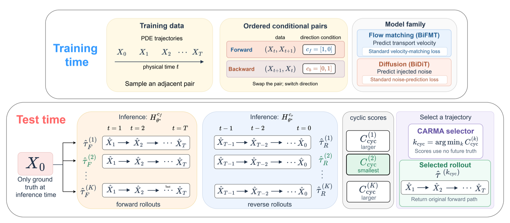

Bidirectional learning
One parameter-shared transformer learns forward and backward transitions from ordered pairs, using a direction code.
Under review at TMLR
CARMA uses a model’s forward–backward consistency to select a trajectory from stochastic PDE rollouts—without future ground truth or test-time parameter updates.
Explore the methodThe method
A shared direction-conditioned transformer learns adjacent PDE-state transitions in both physical-time directions. At inference, CARMA ranks complete rollout paths by how faithfully they reconstruct backward.

One parameter-shared transformer learns forward and backward transitions from ordered pairs, using a direction code.
Flow-matching or diffusion surrogates generate multiple autoregressive futures from the observed initial state.
Each terminal state is rolled backward. CARMA returns the original forward path with the smallest path-wise cyclic discrepancy.